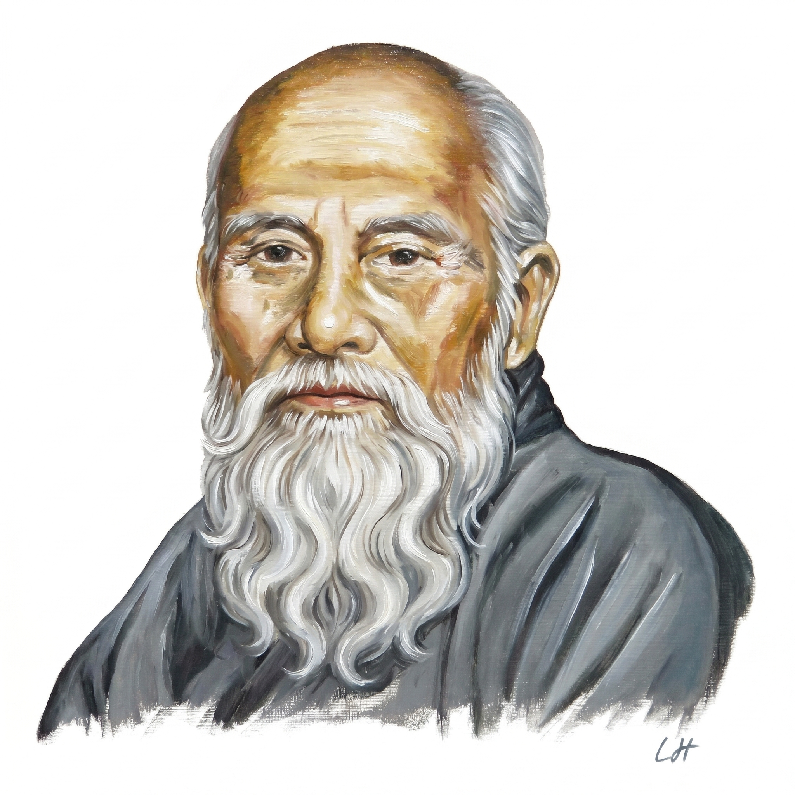

Andy — Personal Life Assistant · Agent Reference
Sensei is an autonomous ReAct-loop agent embedded in Andy. It acts as a habit coach, daily & weekly planner, execution reviewer, and mind coach. Unlike the regular Andy chat, Sensei reasons in multiple steps — calling internal data tools before delivering structured advice — rather than answering in a single pass.
think · tool · answer{ step, thought, tool, args, sections[], summary }/v1/chat/completions) or Claude fallback, configured in SettingsSensei calls these tools during its reasoning loop to pull live data from the app's localStorage before making recommendations.
| Tool name | What it returns |
|---|---|
| get_habits | All habits with name, frequency, current streak, longest streak, 7-day & 30-day adherence rate, and last 14 log entries (date + done flag) |
| get_tasks | Open tasks (id, title, priority, due date, deferral count, category), overdue tasks, and chronically deferred tasks (deferred 2+ times) |
| get_deadlines | All active deadlines with title, due date, days left, category, status — sorted by urgency (soonest first) |
| get_mind_thoughts | Last 30 Mind tab entries with text content, emotion tag, and timestamp |
| get_execution_stats | Open task count, overdue count, chronically deferred count, average deferrals per task, and top 5 most-deferred tasks |
Pre-built one-click queries that trigger a full Sensei reasoning run with a specific focus.
| Location | Asset |
|---|---|
| Sidebar nav icon | Sensei.png (18×18, circular) |
| SenseiView header avatar | Sensei.png (36×36, circular, indigo ring) |
| Empty state — no backend | Sensei.png (64×64, circular, 60% opacity) |
| Empty state — ready | Sensei.png (64×64, circular, 60% opacity) |
Most AI features in Andy work as a single call: You ask → LLM answers → done. Sensei is different — it decides for itself what information it needs before answering.
get_habits →
calls get_execution_stats →
calls get_mind_thoughts →
only then answers with advice grounded in your real data.
| Property | What it means in Sensei |
|---|---|
| Tool use | Can call functions to fetch live data — not just talk |
| Self-directed | Decides which tools to call and in what order, based on its own reasoning |
| Multi-step | Up to 7 steps per run; each step informs the next |
| Goal-driven | Given a goal ("do a daily review") and figures out the path itself |
| No scripted path | Sequence of tool calls is not hardcoded — the LLM chooses them at runtime |
The technical pattern is called ReAct (Reasoning + Acting). Compare to regular Andy chat: you say "add a task" and it adds a task. Sensei is never told how to do a review — it works that out on its own each time.
Andy can use the same ReAct pattern as Sensei, but focused on generating a structured plan (not just coaching advice). Andy would decide what data to pull, then produce a concrete schedule.
| Tool | What it fetches |
|---|---|
| get_calendar_slots | Free/busy blocks from a stored weekly schedule |
| get_priorities | P0/P1 tasks + deadlines due within the planning window |
| get_habits_due | Which habits are scheduled for which days of the week |
| get_energy_pattern | User's logged energy levels by time of day (if tracked) |
| get_family_commitments | Events/responsibilities from the Family tab |
Most of these already exist via get_tasks, get_deadlines, get_habits — so the tool lift is small.
| Mode | Window | Output |
|---|---|---|
| 📅 Day Plan | Today | Hour-by-hour block schedule, top 3 focus tasks, habit reminders |
| 📆 Week Plan | Next 7 days | Day-by-day priorities, deadline countdowns, habit momentum targets |
| 🗓 Month Plan | Next 30 days | Big rocks (P0 deadlines), habit streaks to build, weekly themes |
| Option | Approach | Trade-off |
|---|---|---|
| Option 1 | Add 📅 Day Plan, 📆 Week Plan, 🗓 Month Plan as new quick modes inside Sensei | Less work, planning stays next to coaching — natural fit |
| Option 2 | Separate "Planner" tab with calendar-style output and saveable/pinnable plans | Cleaner UX if planning becomes a daily habit — more build effort |